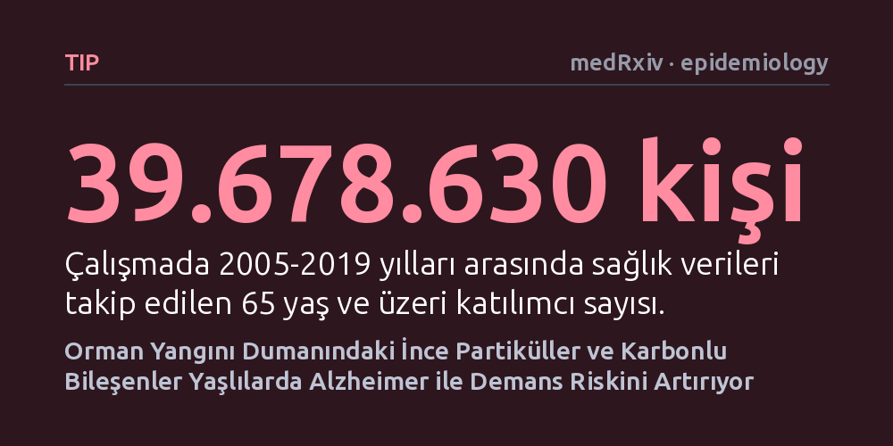

TIP · medRxiv · epidemiology · 2026-10-12
ABD'de yaklaşık 40 milyon yaşlı üzerinde yapılan araştırmada, orman yangını dumanına uzun süreli maruz kalmanın Alzheimer ve demans sıklığını artırdığı saptandı. Dumandaki ince partiküllerin, özellikle de organik ve elementer karbon bileşenlerinin bu riski belirgin biçimde yükselttiği görüldü.
Hava kirliliğinde yalnızca toplam parçacık miktarının değil, yangın kaynaklı karbonlu bileşenlerin de beyin sağlığı ve bunama üzerinde doğrudan tehdit oluşturduğunu gösteriyor.

İklim değişikliği ve kuraklık sebebiyle son yıllarda hem orman yangınlarının sayısı hem de etki alanı belirgin biçimde artıyor. Yangınların ürettiği duman binlerce kilometrelik alanlara yayılarak milyonlarca insanın soluduğu havayı doğrudan kirletiyor. Bu dumanın astım, bronşit ve kalp-damar hastalıkları gibi akut sorunları tetiklediği iyi bilinse de sinir sistemi ve beyin sağlığı üzerindeki uzun vadeli sonuçları büyük bir soru işaretiydi.
Özellikle solunabilen ince partiküllerin (PM2.5) ve bunların taşıdığı kimyasal bileşenlerin merkezi sinir sistemine ulaşıp nörodejeneratif süreçleri hızlandırıp hızlandırmadığı merak ediliyordu. Hızla yaşlanan nüfusla birlikte Alzheimer ve ilişkili demans vakalarının küresel yükü büyürken, yangın dumanına maruz kalmanın bu riski tetikleyip tetiklemediği sorusu yanıt bekleyen kritik bir halk sağlığı meselesi haline geldi.
Araştırma ekibi, 2002 ile 2019 yılları arasındaki ABD Medicare (kamu sağlık sigortası) kayıtlarını temel alarak 65 yaş ve üzeri 39.678.630 kişinin sağlık verilerini mercek altına aldı. Katılımcılar 2005'ten 2019'a kadar izlendi; bu süreçte 258,5 milyon kişi-yılı aşkın takipte 3,5 milyondan fazla yeni Alzheimer tanısı ve 248,6 milyon kişi-yılı takipte yaklaşık 8,4 milyon yeni demans tanısı kayıtlara geçti.
Araştırmacılar, her katılımcının bulunduğu coğrafi konuma göre yıllık yüksek çözünürlüklü hava kirliliği tahminlerini sağlık kayıtlarıyla eşleştirdi. Havadaki ince partiküller sadece toplam kütle olarak değil, orman yangınlarından kaynaklanan ve yangın dışı kaynaklardan gelen partiküller şeklinde ayrıştırıldı. Ayrıca yangın dumanında yer alan organik karbon ve elementer karbon gibi karbonlu bileşenlerin konsantrasyonları da ayrı ayrı hesaplanarak tabakalı Cox orantılı tehlikeler modelleriyle incelendi.
Yapılan analizler, orman yangını kaynaklı ince partiküllerdeki (PM2.5) her 1 mikrogram/metreküplük artışın Alzheimer riskinde yüzde 1,5, tüm ilişkili demanslarda ise yüzde 2,9 oranında artışla ilişkili olduğunu gösterdi. Dumandaki karbonlu fraksiyona odaklanıldığında ise bu ilişkinin belirgin biçimde güçlendiği tespit edildi: Karbonlu bileşenlerdeki her 1 mikrogram/metreküplük artış, Alzheimer riskinde yüzde 6,3, demans riskinde ise yüzde 9,0 yükselişle bağlantılıydı.
Birim kütle bazında kıyaslandığında, yangın dumanı kaynaklı partiküllerin demansla ilişkisi yangın dışı partiküllerin ilişkisini geride bıraktı. Yazarların hesaplamalarına göre bu risk oranları, ABD'deki yaşlı nüfusta yılda 2.284 yeni Alzheimer ve 11.142 yeni demans vakasının doğrudan yangın dumanı kaynaklı PM2.5 maruziyetine bağlanabileceğini ve bu yükün büyük bölümünün dumandaki karbonlu bileşenlerden kaynaklandığını ortaya koyuyor.
Ancak yıl genelindeki maruziyet aralığı (çeyrekler arası değişim) üzerinden bakıldığında, yangın dumanının etkisi yangın dışı partiküllerin genel etkisine kıyasla daha küçük kaldı; zira sanayi ve trafik kaynaklı kirlilik yıl boyunca çok daha kesintisiz bir maruziyet oluşturuyor. İncelenen ilişkilerin coğrafi bölgelere, etnik kökene ve sosyoekonomik duruma göre farklılıklar gösterdiği de belirlendi.
Bu sonuçlar, hava kalitesi değerlendirmelerinde sadece toplam partikül yoğunluğuna bakmanın eksik kalabileceğini düşündürüyor. Odun ve bitki örtüsünün yanmasıyla havaya karışan kurum ve organik karbon gibi bileşenler, beyin sağlığı açısından daha toksik bir kimyasal profil sergileyebilir.
Bununla birlikte, çalışmanın gözlemsel nitelikte olduğunu ve doğrudan biyolojik bir neden-sonuç kanıtı sunmadığını unutmamak gerekir. Yine de elde edilen bulgular, demans araştırmalarında ve yangın dumanı erken uyarı sistemlerinde kaynağa ve kimyasal bileşime duyarlı ölçütlerin kullanılmasının önemini açıkça destekliyor.